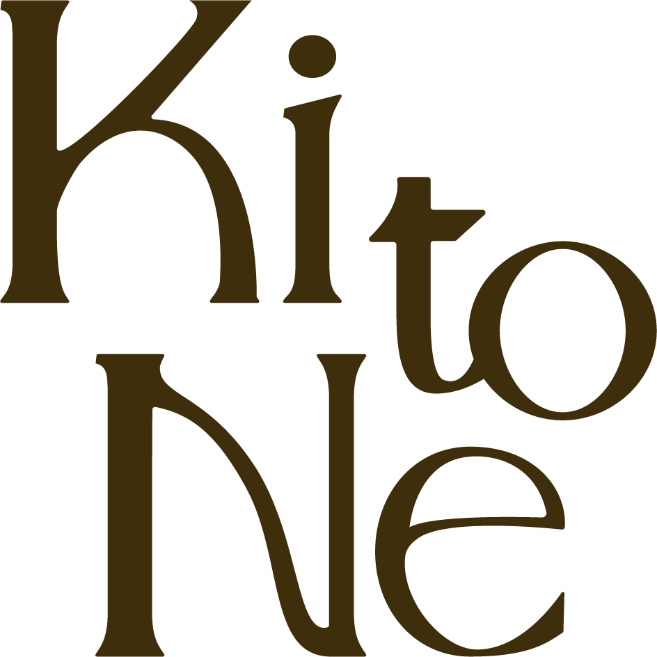
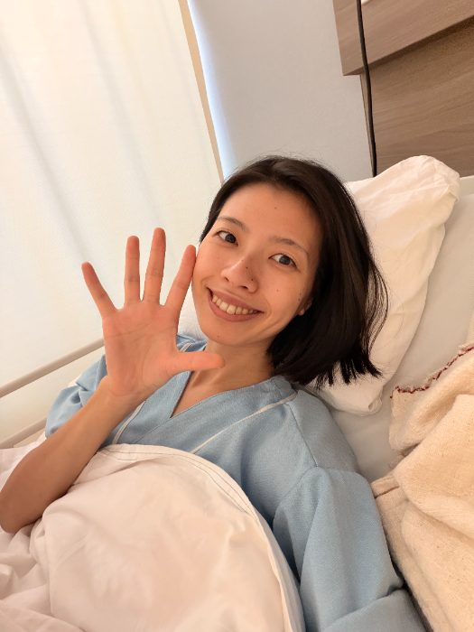
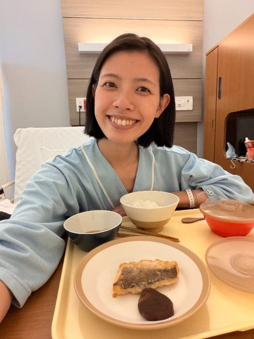
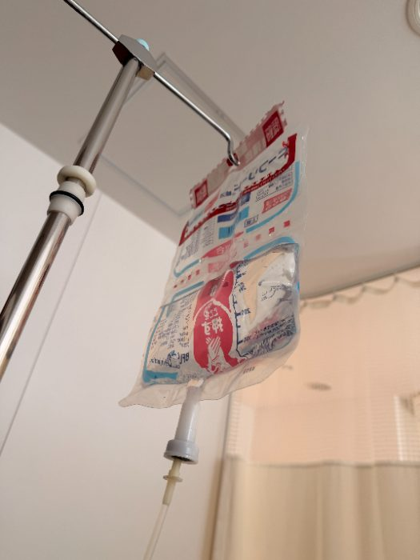

“{{ v.tag }}
{{ v.title }}
{{ v.body }}
{{ v.name }}

申込む10/8 20:00〜がっつり断食じゃない。
食べ方を少し整えて、
カラダの声を聞いてみる。
うさしほがお伝えする、
自分の食生活と向き合う
7日間のオンラインプログラムです。
10回以上のグループサポートを行ってきた
うさしほの、はじめての試みです。
お申込み受付：10/8（木）20:00〜 締切：{{ deadline }}
単なる食事改善の
プログラムではないヨ 🐰🥕
「もっと、もっと」と求めること。
頑張りすぎること。
我慢して飲み込むこと。
7日間、食を少し整えることを入り口に、
カラダ・心・暮らしの
バランスも振り返るキッカケに。
「秋」だからこそ、年末に向けて
ちょっと余白をつくってみませんか？
この7日間では、うさしほサポートと
スペシャルアイテムの力も借りながら
食生活に小さなヨハクをつくっていきます。
予定や体調、生活リズムに合わせて
今の自分にちょうどいい整え方を
一緒に見つけていこう🐰🥕
＼ さらに ／
2026年、3度の入院を経て気づいたこと。
食だけではない大切なことも
お伝えしていきます。
毎日の過ごし方が、
ちょっと変わるキッカケに…🐰
7日間の流れ（一例）
{{ d.theme }}
スワイプで見られます →
毎日のテーマと一緒に、
食生活をゆるく整えるヒントもお届けします。
スペシャルアイテムも取り入れながら、
自分に合う使い方・整え方を見つけよう！
※ 内容は一例です。変更になる場合があります。
知って、整えて、自分のペースで続ける。
{{ s.title }}
{{ s.body }}
📖 自分のタイミングでマニュアルもチェック👀
💬 分からないことは「質問ノート」へ。
原則24時間以内にお答えします
気づきをシェアしてくれたで賞🐰
として、
グリーンモンスター15本
🎁プレゼント🎁
終了後にお届けします。
体重などの数値の変化や投稿数だけではなく
自分と向き合ったプロセスや
気づきのシェアを大切に選びます。
※ 見るだけ参加もOKですが
これが欲しい方はシェアしましょう🎁
食を整える企画・腸活企画など、
これまでの企画に参加された方の感想です。
{{ v.title }}
{{ v.body }}
{{ v.name }}
※ 個人の感想です。体感には個人差があります。
管理栄養士／ファスティングマイスター1級／健康美容食育士 認定インストラクター／ヨガ講師
管理栄養士／ファスティングマイスター1級／健康美容食育士 Advance 認定講師
うさしほのリアルな日々と食生活も
7日間のなかでシェアします🐰🥕
何を食べているかだけではなく、
食べすぎた日や予定がある日に
どう調整しているかもシェア…💡
リセット習慣をつけて
自分だけの心地よいバランスを見つけよう 🐰



これまで10回以上のグループサポートを
行ってきたうさしほが、
今回はじめての形でお届けする特別な企画です。
キッカケは先日（9月）の16日間の入院。
そして、10日間の絶食と毎日の抗生剤点滴…
2026年、3度目の入院でした。
日々の健康なカラダへのありがたみ、
食べること、休むこと、心の声を聴くこと。
「自分を大切にする」ことの大切さを
あらためて感じました。
だから今回、
「食」だけではなく、
わたしが日常で大切にしていることも
7日間かけてシェアします。
だからこそ今回は、
参加しやすい特別価格でご案内します 🐰
うさしほのこれまでの学びや経験を、
オリジナルでまとめた専用マニュアル。
スマホでアプリ感覚で読めて、
読んだら既読チェック。
自分の進み具合が一目でわかります。
※ 閲覧期限は、プログラム終了から
1週間後の11/7（土）までです。
7日間の相棒アイテム！2つ
普段の食事だけでがんばるのではなく、
腸活アイテムの力もちょっと借りながら整える。
みんなで同じものを取り入れながら、
自分のカラダや食生活を観察する
7日間です🐰
MANA酵素 1本
9,155円（税込）
グリーンモンスター 15本
3,240円相当
※30本入り6,480円（税込）から換算
送料
通常950円
商品＋送料だけでも
13,345円相当
➕
さらに今回は、
そこに
＋1,655円で、
7日間のプログラムがすべてついてきます
初開催限定15,000円（税込・送料込み）
参加費のほとんどは、
お届けする商品と送料の代金です
（MANA酵素・グリーンモンスター15本
送料で 13,345円相当）
ただ、商品を試す企画ではなく
食や暮らしを見直すPOINTや
「日常への取り入れ方」までお伝えします
\ この価格でご案内できるのは、今回だけ /
はじめての開催だからこその、特別価格🐰
初開催だからこそ
気軽に体験していただける価格で
ご用意しました🐰🌿
お申込み受付：10/8（木）20:00〜 締切：{{ deadline }}
さらに、先着10名様限定で
うさしほ愛用の
エナジーバーをプレゼント！
種類は、何が届くかお楽しみに🐰
・お申込み・お支払い完了後の、お客様都合によるキャンセル・返金は承っておりません。
・商品（MANA酵素・グリーンモンスター）の発送後は、返品・交換をお受けできません。
・商品に破損や不良があった場合は、到着後7日以内に公式LINEまたはメールでご連絡ください。交換などで対応いたします。
・体調不良などで途中で参加をお休みされた場合も、返金はございません。期間中のサポートは、無理のない範囲でご利用ください。
・プログラム開始日の数日前までに届くよう、順次発送します。
・国内のみの発送となります。